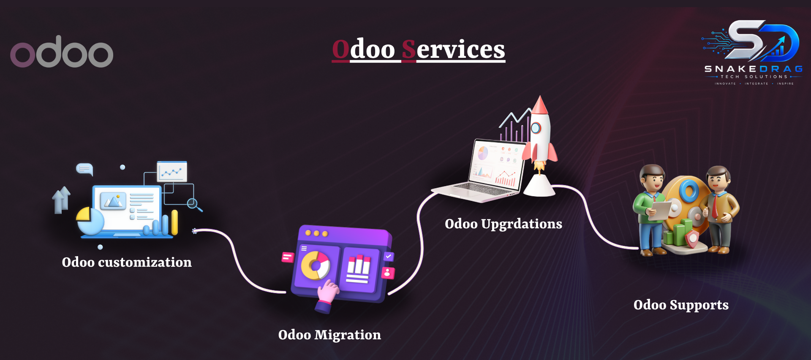

Dynamic Home Dashboard is a modern Odoo home screen enhancement developed by SnakeDrag Tech Solutions. It replaces the standard Apps page with a smarter dashboard where users can view a live clock, search applications and internal menus, organize app tiles, and work from a cleaner and more productive entry point. The module is designed to improve navigation speed, visual presentation, and user experience across desktop and mobile screens.
SnakeDrag Tech Solutions provides Odoo services focused on customization, migration, upgradation, and support. Dynamic Home Dashboard is developed to improve the backend experience by making Odoo navigation smarter, cleaner, and more user-friendly for everyday operations.
